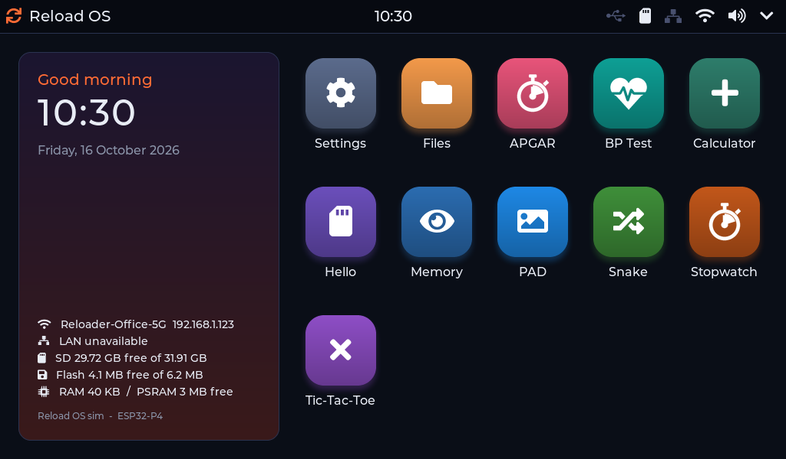
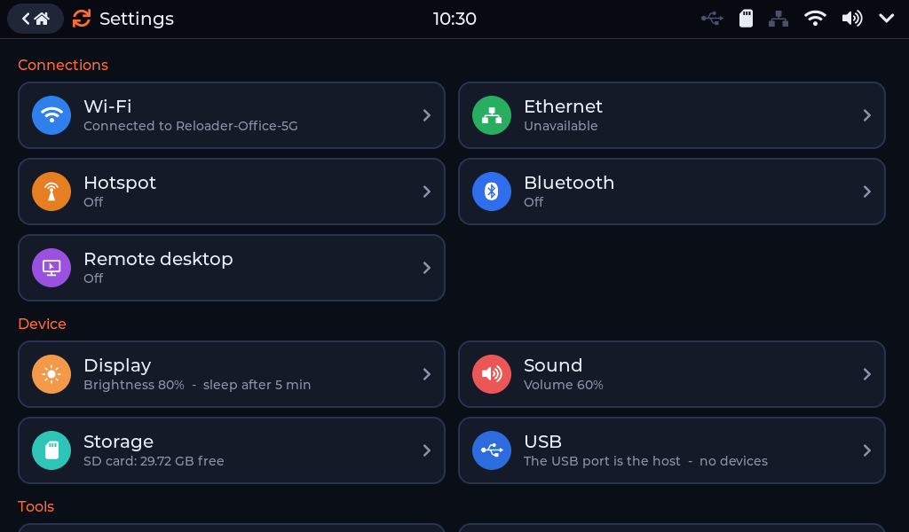
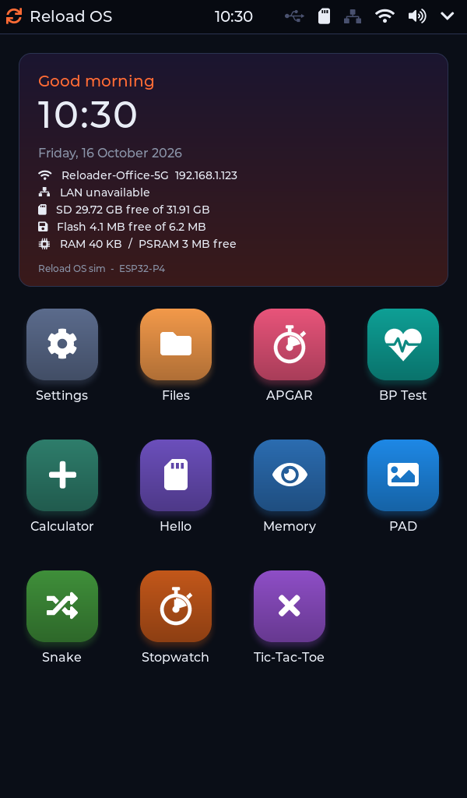
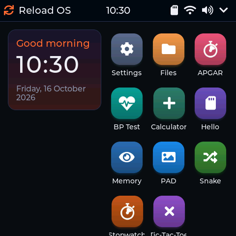
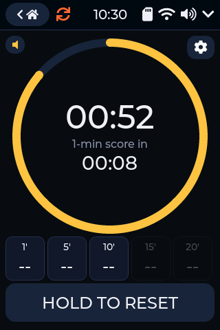
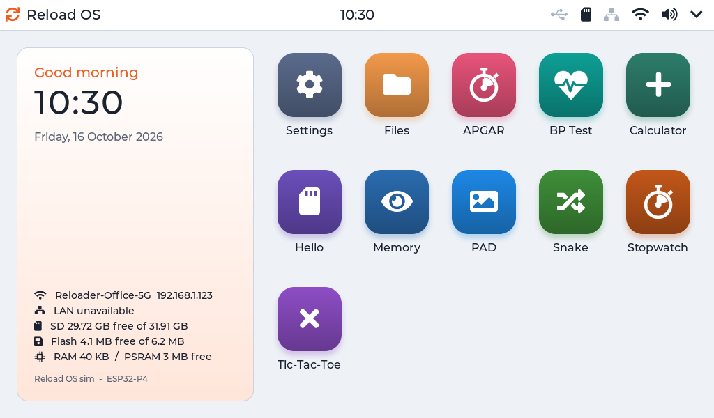

Firmware for touch kiosks
Reload OS - the system for ESP32 touch kiosks
One firmware for touch screens from 3.5" to 10.1": a finished touch shell, Settings, networking, USB devices, management from a browser and apps you install from a drive - made for devices that run all day with nobody watching them.

What is in it
Everything a kiosk needs, already there
Reload OS is plain ESP-IDF C with LVGL. A product built on it starts with all of this and adds only its own app.
A finished touch shell
Status bar, a launcher you order by dragging, quick settings, dark and light themes, a big on-screen keyboard with Thai, screen timeout - and an app that opens by itself at start.
Apps without new firmware
An app is a file in apps/ on the device's flash drive or SD card. Copy it, restart, tap its tile.
Customers write their own with the app kit.
Connected
Wi-Fi and Bluetooth LE, Ethernet with DHCP or a fixed address, a hotspot that shares the device's internet, the time from the network kept by a battery clock.
USB devices
Flash drives, keyboards and barcode / QR scanners, serial adapters, webcams, smart-card readers and receipt printers - and the device itself as a USB drive for a PC.
Managed from a browser
See and drive the screen from a browser with a login, manage the files on every drive, change settings and update the firmware over the network.
Runs unattended
Updates that roll back, a record of every crash, safe mode after a crash loop, a watchdog on the screen and a touch controller that is brought back when it stops answering.
One look on every screen
Horizontal, vertical, square, small
The same shell and apps lay themselves out for each board's screen and for the way the device is mounted. The pictures are the real UI, rendered at each board's screen size.





Built on Reload OS
Products
One system, several products: a product chooses its apps and its defaults; drivers, Settings, updates and the safety net are shared, so a fix in the system reaches every product.
QR payment pad In development
A small touch pad on a vending or washing machine: the customer picks an amount, pays by PromptPay QR, the pad sends pulses to the machine's coin input.
APGAR timer
The newborn's APGAR timer for the delivery room: the clock from birth, the 1, 5 and 10 minute scores with beeps, the score sheet and a log - in English or Thai.
Health kiosk
A blood-pressure kiosk for hospitals and clinics: identify with the Thai ID card, measure, and send the result straight into the hospital's database.
For developers
Write your own app
The app kit builds an app for a Reload OS device without the firmware's source: C, LVGL 9.2 and the Reload OS API, ESP-IDF 6.1, one command.
- The firmware's screen, network, storage, audio, USB, printer and card-reader services
- Built per board, checked against what the firmware exports before it reaches a device
- Installed by copying one file - from a browser, a PC or an SD card
#include "ros.h"
static void create(lv_obj_t *body) /* the app's screen */
{
ros_ui_label(body, &lv_font_montserrat_32, ROS_C_TEXT, "Hello");
}
/* the launcher's tile: name, glyph, colour */
ROS_ELFAPP_META("Hello", LV_SYMBOL_SD_CARD, 0x6B4FBB);Your product on Reload OS
Reloader Co.,Ltd. builds kiosks and the products on them: your launcher, your defaults, your app - on a board from the list or on yours.
